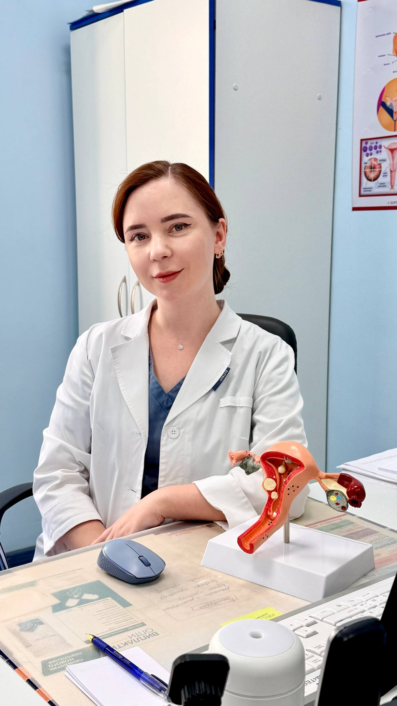

❀
Интимная пластика
Лабиопластика, пластика входа во влагалище, коррекция после родов. Ювелирный шов, минимальный период восстановления.
Подробнее →Татьяна — оперирующий гинеколог. Работаю там, где важна не только медицина, но и чуткость. Помогаю мягко, без осуждения и громких слов.

Я закончила ординатуру по акушерству и гинекологии, прошла специализацию по эстетической и оперативной гинекологии в России и за рубежом. Веду пациенток от первой консультации до полного восстановления — и после.
В моей практике — интимная пластика, биопластика, лечение опущения и эстетика интимной зоны. Но прежде всего — внимательный, спокойный разговор. Я уверена: чтобы помочь, нужно сначала услышать.
От первичной консультации до сложных операций. Каждое направление — это не услуга из списка, а ответ на запрос конкретной женщины.
Лабиопластика, пластика входа во влагалище, коррекция после родов. Ювелирный шов, минимальный период восстановления.
Подробнее →Помогаю разобраться в причинах: гормональные нарушения, спайки, эндометриоз, патология матки. Веду пациентку поэтапно — от диагностики до восстановления фертильности.
Подробнее →Лечение опущения стенок, миом, эндометриоза. Лапароскопия и малоинвазивные методики.
Подробнее →Регулярные осмотры, кольпоскопия, УЗИ, цитология. Спокойно, без спешки и осуждения.
Подробнее →Программа для тех, кто хочет вернуть тело себе. Без давления — в вашем темпе.
Подробнее →Если уже была операция или вам предложили лечение — разберём вместе, без навязывания.
Подробнее →Не обязательно объяснять кому-то, почему вам это важно — мужу, маме, подругам. Если что-то в теле мешает вам чувствовать себя собой, этого достаточно, чтобы прийти на консультацию. Здесь не осуждают и не уговаривают передумать.
Интимная пластика и биопластика требуют не только хирургического мастерства, но и эстетического чутья. Аккуратный косметический шов и внимание к мелочам — то, что отличает результат «сделано» от результата «сделано красиво».
Не нужно ждать месяцами и гадать, подействовало ли лечение. Результат эстетической гинекологии заметен быстро — и вместе с ним возвращается уверенность, о которой вы, может быть, давно забыли.
За каждой спокойной консультацией стоит хирург, который оперирует почти каждый день. Это не теоретик с дипломом — это специалист, чьи руки помнят сотни операций и точно знают, что делают.
Можно сказать как есть — «неудобно», «стесняюсь», «не знаю, нормально ли это». Татьяна слышит то, что женщины обычно держат при себе, и помогает, не заставляя краснеть и оправдываться.
Каждая вторая пациентка приходит по совету подруги, которая уже была здесь. Кто-то стеснялся прийти годами, кто-то решился после одного разговора — а потом сама привела кого-то ещё.
Через WhatsApp, Telegram или по телефону. Без анкет на две страницы.
20–30 минут разговора и осмотра. Объясняю всё простым языком, без латыни и страшилок.
Несколько вариантов решения с честными плюсами и минусами. Выбор — за вами.
Операция, восстановление, контрольные визиты. На связи и после — всегда.
Первый шаг — самый трудный. Дальше я рядом.
Личное пространство, где я разбираю темы, о которых не пишут открыто. Без рекламы, без чужих глаз, без осуждения.
Бесплатно · можно выйти в любой момент
Не нашли свой вопрос? Напишите мне в Telegram — отвечу лично.
Задать вопросБольшинство процедур проводятся под местной анестезией, серьёзные операции — под общим наркозом. Я всегда заранее объясняю, что вы будете чувствовать.
От 3 дней (биопластика, PRP) до 3–4 недель (интимная пластика). Конкретные сроки разберём на консультации.
Да. Консультация — не обязательство. Можно прийти, спросить, подумать, не возвращаться. Это нормально.
Это вообще не повод откладывать. Я работаю спокойно, без поспешных оценок. Все «неловкие» темы — рабочие.
Полностью. Никаких фото без согласия, никаких упоминаний. Всё, что вы говорите, остаётся в кабинете.
Программы есть для повторных пациенток и комплексных решений. Подробности — на консультации.
Напишите в WhatsApp, Telegram или позвоните — отвечу лично, в течение часа в рабочее время. Без анкет, без перезвона роботом.